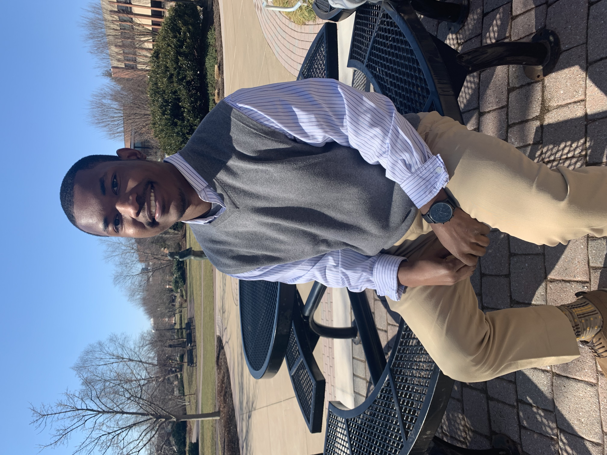

Thanks for visiting!
Bachelor of Science in Business Administration (BSBA): Information Technology & Analytics '23
Welcome to my portfolio! I’m a proud Philadelphian, born and raised in the vibrant city that has shaped my passion for exploration and storytelling. My interests span the intriguing realms of true crime, where I love delving into the complexities of human behavior, to the joys of reading, which fuels my imagination and inspires my analytical mindset.
When I’m not immersed in a captivating book or unraveling the latest crime documentary, you can find me hiking through nature's beauty, embracing new trails, or planning my next travel adventure. As an avid Eagles fan, I carry the spirit of my city’s sports culture with me, cheering for the team with unyielding enthusiasm.
I believe in blending professionalism with a touch of fun, and I strive to bring that balance to all my projects. I’m excited to share my work with you and look forward to connecting!
My Love for Computers
The age of 7, in 2007, my journey into the world of technology began. My stepfather worked for Verizon, selling cutting-edge telecommunication devices—imagine FaceTime, but on a device that looked more like a sleek, early laptop. This was a time when computers were far from the marvels they are today. Yet, the very notion of a device with such advanced capabilities captivated my young mind, igniting a spark of curiosity. I was determined to unravel the mystery behind its inner workings. How was it possible? Why did it work this way? These questions fueled my fascination, and the more I interacted with that device, the deeper my intrigue grew. By the age of 8, my stepfather brought home a Dell Optiplex computer. The moment I sat in front of that screen, my world changed forever. Browsing the web for the first time felt nothing short of magical. It was as though the entire world lay before me, just a click away. I spent hours on sites like Poptropica, Club Penguin, IMVU, and Wizard 101, exploring virtual realms and connecting with people far beyond my reach. I was hooked—not just on the fun and games, but on the boundless possibilities that computers offered. As my love for technology grew, so did my internal conflict. While I was mesmerized by the world of computers and coding, my heart was set on law. From a young age, I had envisioned myself as a lawyer, fighting for justice and making a difference. But the pull of technology never truly left me. At 13, I bought a "Code for Dummies" book, diving into Python, CSS, and JavaScript. I taught myself the basics, yet, at 15, I chose to set aside coding to focus on my dream of becoming a lawyer. It wasn’t until my freshman year of college that my world took a turn once more. I sat in a business class when a professor gave a presentation about the IT & Analytics programs. In that moment, everything I had loved about computers and coding came rushing back, reigniting a passion I thought I had left behind. That very night, I changed my major and never looked back. This was more than just a decision—it was a homecoming to the world I had always belonged in. Now, my mission is clear: to combine the analytical rigor of technology with the creativity and innovation that first drew me in all those years ago. My story is just beginning.
My analytical experience truly began during my freshman year of college, but my journey toward becoming the professional I am today started long before that. As I mentioned before, my younger self was torn between two distinct paths—law or technology. Ultimately, I pursued law, but deep down, I knew my ultimate purpose was to create a meaningful impact, something far-reaching. Even during high school, I was sharpening my critical thinking skills. I took part in leadership programs like Teach For America, which expanded my mind and gave me the courage to stand behind my beliefs. Leadership, conviction, and character—these are not just essential qualities of a great leader; they form the foundation of a great analyst. In college, I began to grow technically. I dove headfirst into real-world applications—building financial reports and working on various projects that pushed me to connect theory with practical, repeatable insights. During my undergrad, I also had the privilege of working as a Project Manager Assistant at Commonwealth University of Pennsylvania, where I contributed to the OneSIS/Banner project. That experience taught me invaluable lessons about managing complexity, balancing competing priorities, and understanding how granular details affect broader outcomes. It sharpened my ability to synthesize information—an essential skill for any analyst. After college, I took a sales position in the energy sector, which opened my eyes in ways I hadn’t expected. It wasn’t just about numbers anymore—it was about people. I learned how to navigate different personalities, tailor approaches to specific individuals and quickly think on my feet. During my first week solo on the job, I was sent on a road trip to Bloomsburg—a trial by fire if ever there was one! I will admit, my first two days were tough. But instead of succumbing to the pressure, I stepped back, reassessed the situation, and consulted with my coach. Together, we developed a plan. By the last three days, I had turned things around, producing consistent, repeatable results. That breakthrough not only earned me a promotion to Business Sales Account Manager but also made me the top earner for the week. It was a powerful reminder of the importance of adaptability. Taking a step back and reevaluating a situation before jumping to solutions—this is what separates good analysis from great analysis. The experience taught me that success, whether in sales or analytics, hinges on your ability to assess what’s happening beneath the surface and identify which actionable insights will drive meaningful results. As I continue on my analytical journey, my focus remains the same: to create impactful, data-driven solutions that not only solve problems but leave a lasting, meaningful impact. After all, that’s the ultimate goal—to make a difference that truly matters.
A: My greatest strengths include [Your Answer Here].
A: My career aspirations are to [Your Answer Here].
"The only way to do great work is to love what you do." - Steve Jobs
"Success is not final, failure is not fatal: It is the courage to continue that counts." - Winston Churchill